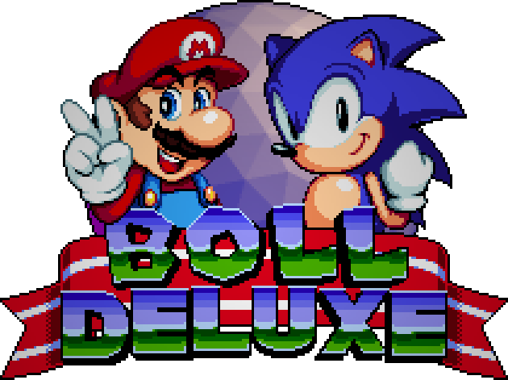
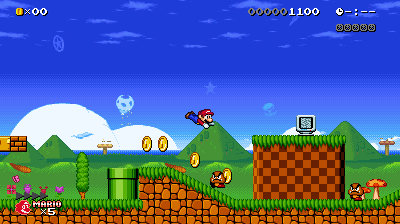
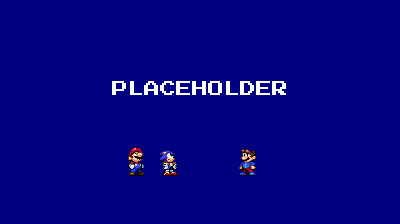
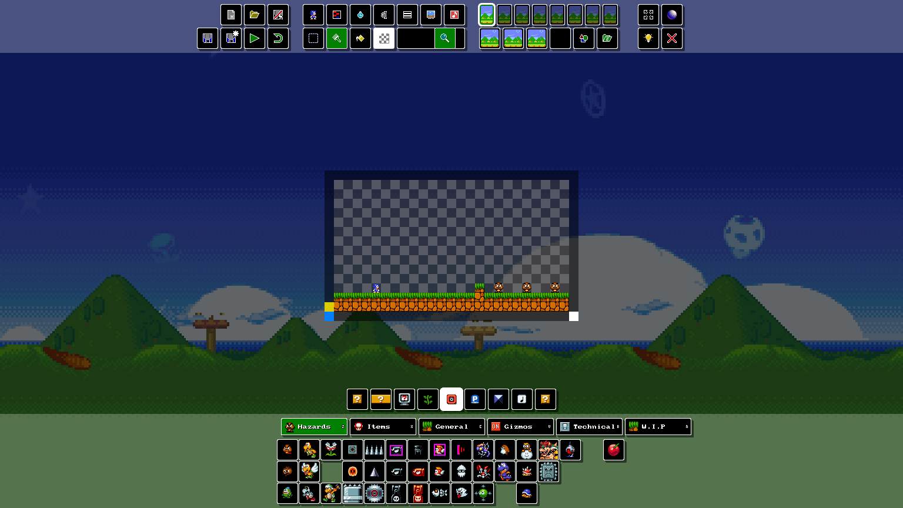
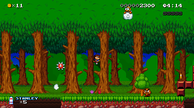
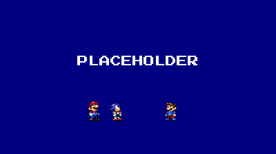
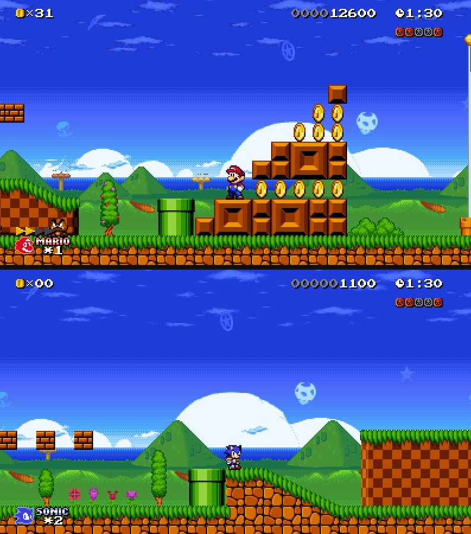

Boll Deluxe is a crossover fan game with Mario and Sonic, in which you progress through Mario-styled levels as various Mario or Sonic characters (plus a couple of guests).
Classic-Style Platforming
Travel through 8 full worlds as a roster of 12 different characters, each with a unique moveset.



Modding Support
Boll supports custom levels, skins, and characters (called Charms). It even has a built-in level editor called the Lemon Editor.



Play with Friends
With up to 3 friends locally, race in classic Sonic 2 fashion in Battle Mode or work together to take on Bowser in Co-Op Mode.
Note: Multiplayer online requires the use of software like Parsec or Steam Remote Play (via Remote Play Anywhere)
